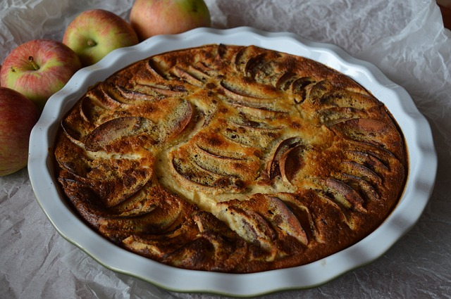

Apfelkuchen  Zubereitung Arbeitszeit: ca. 20 Min. / Schwierigkeitsgrad: simpel / Kalorien p. P.: keine Angabe Eier und Zucker schaumig schlagen. Butter und Milch zum Kochen bringen und heiß zu der Eier-Zucker-Masse geben. Mehl und Backpulver unterheben. Blech mit Backpapier auslegen und den Teig einfüllen. Äpfel in Spalten schneiden und den Teig damit belegen. Backzeit: 25 - 30 Min. bei ca. 200° C Nach dem Erkalten mit Zimt-Zucker oder Mandeln bestreuen.